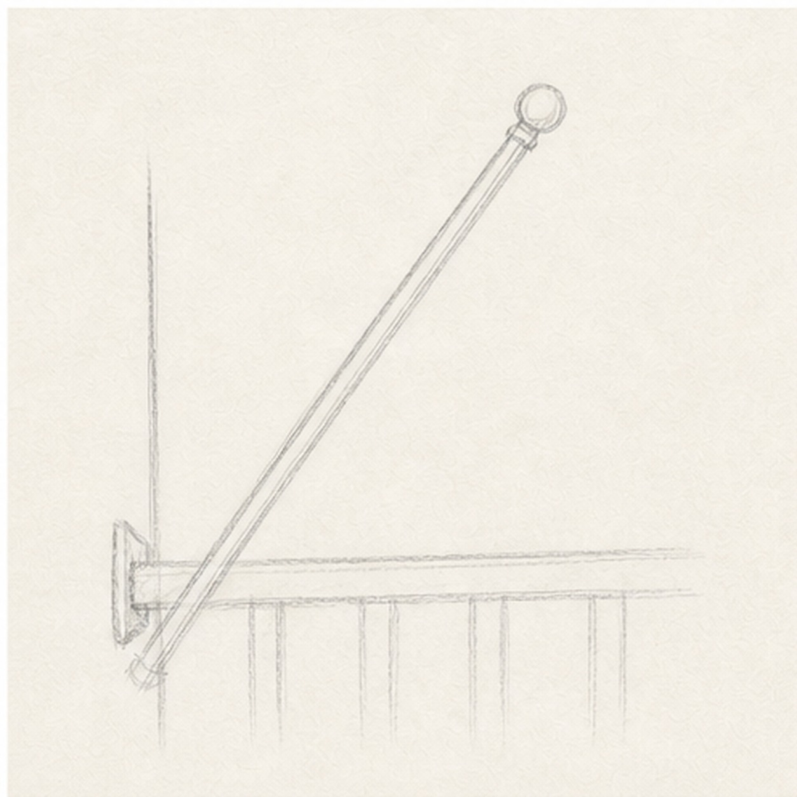
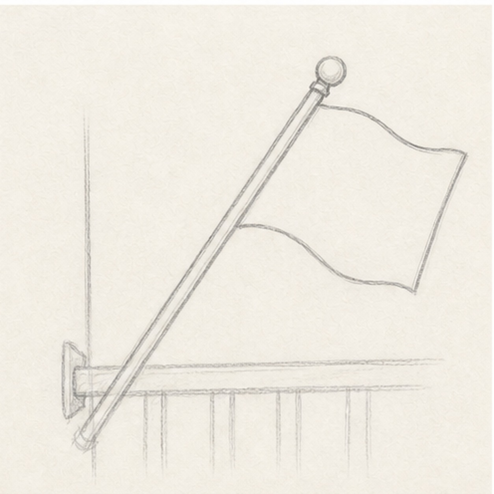
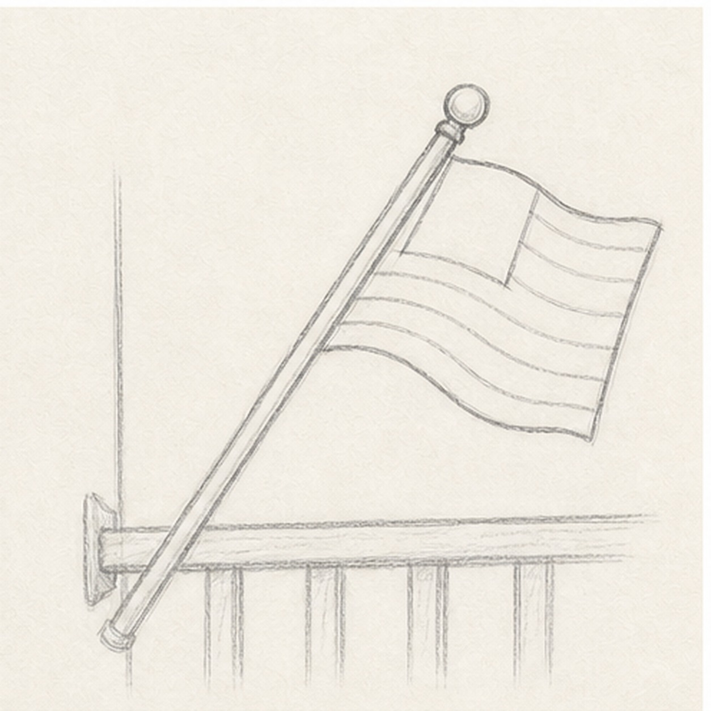
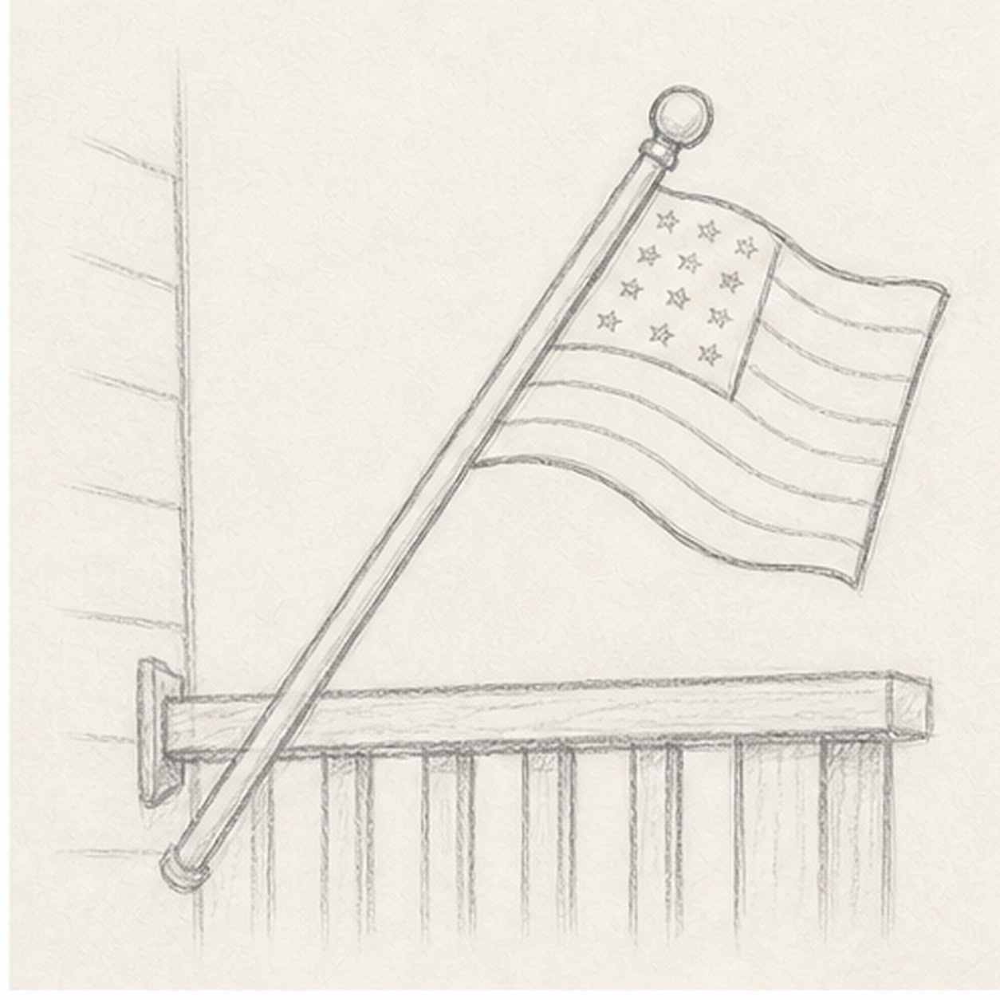

From the archive
Let's draw a porch flag
Work lightly through the construction, then darken only the lines that help the finished sketch.
-
01

Place the pole
Draw one long diagonal pole leaning up from the porch rail, then add a small wall bracket and round finial.
Sketch tip: Let the pole cross the page boldly. A strong diagonal keeps the simple flag from feeling stiff.
-
02

Shape the waving flag
Attach a wavy rectangle near the top of the pole. Curve the top and bottom edges in the same direction so it feels like fabric.
Sketch tip: Keep the far edge slightly vertical. That little straight edge helps the flag stay readable.
-
03

Divide the flag
Add a small corner field near the pole, then draw a few long stripe bands that follow the flag's wave.
Sketch tip: Do not count every stripe. Use enough bands to show the idea while leaving room for pencil texture.
-
04

Add rail and star marks
Sketch the porch rail behind the pole, then scatter tiny star marks inside the corner field.
Sketch tip: Treat the stars like small bright marks, not perfect symbols. They only need to read at a glance.
-
05
Add soft flag color
Shade the stripe bands with light red pencil, fill the corner field blue, and keep the white stripes mostly paper.
Sketch tip: Let the pencil strokes follow the fabric wave. Direction matters more than heavy color.
-
06
Finish the porch flag
Darken the keeper lines on the pole, rail, stripes, and flag edge, then add a little graphite shadow to the porch boards.
Sketch tip: Stop before the flag gets too polished. The sketch should still look quick enough for one sitting.